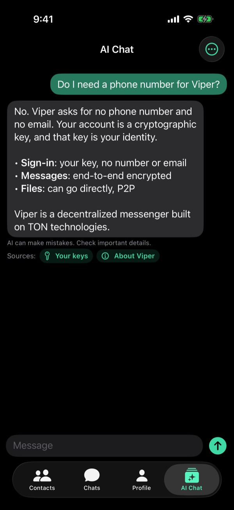

Viper 1.5.30
On-device AI
Updated for Viper 1.5.34 (November 19, 2026)
What changed since this post. Where the post and the app differ, the app is right.
- Since 1.5.34 AI Chat also offers GPT-OSS 20B on a Mac (with Viper knowledge) and the MedPsy models, so the list is longer than the ten below.
- AI chats and models can be deleted in Settings → Security and Data → Storage.

Viper now has a private AI assistant that runs entirely on your device.
- AI Chat tab: ask anything. Nothing you type leaves your device, and it works offline once the model is downloaded.
- Choose from 10 open models. Viper suggests one that fits your iPhone, iPad or MacBook.
- Bring messages from a chat into AI Chat and ask about them.
- Long-press an answer to forward it to any chat.
- Set the answer length: Short, Normal, Long or your own limit.
- AI chats are saved on this device only, encrypted with your account key.
- New Storage screen: see what takes space and free it.
The models (Apache 2.0 or MIT), from the smallest:
- Qwen3 0.6B (Alibaba): 0.35 GB download, 4 GB of memory
- Qwen3.5 0.8B (Alibaba): 0.65 GB, 4 GB
- Qwen3 1.7B (Alibaba): 1 GB, 4 GB
- Qwen3.5 2B (Alibaba): 1.8 GB, 6 GB
- SmolLM3 3B (Hugging Face): 1.8 GB, 6 GB
- Granite 4.0 Micro (IBM): 1.8 GB, 6 GB
- Phi-4 mini (Microsoft): 2.2 GB, 8 GB
- Qwen3 4B (Alibaba): 2.3 GB, 8 GB
- Ministral 3 3B (Mistral AI): 2.8 GB, 8 GB
- Edge0 8B: 4.6 GB, 8 GB. The largest: a mixture-of-experts model that reads its experts from storage as it answers
Also new in chats:
- Videos show like photos, with a preview right in the chat.
- Send up to 10 photos and videos at once, in the order you pick them.
- Flip between the front and back camera while recording a video circle.
- Front-camera photos are sent the way the preview showed them.
Text: the App Store “What's New” for Viper 1.5.30, released October 17, 2026. Screenshots: Viper 1.5.34 with sample data. All release notes